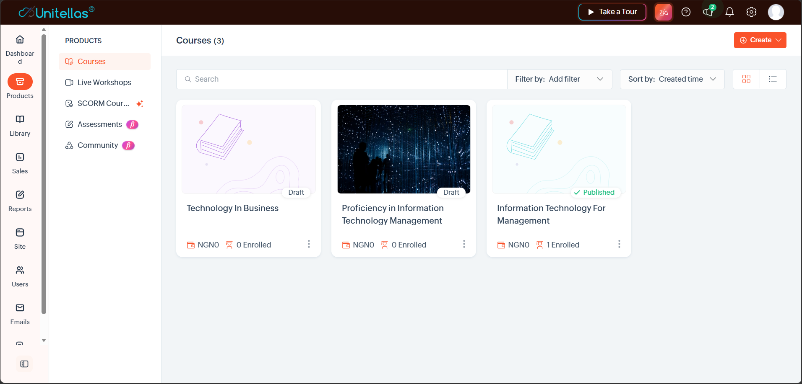
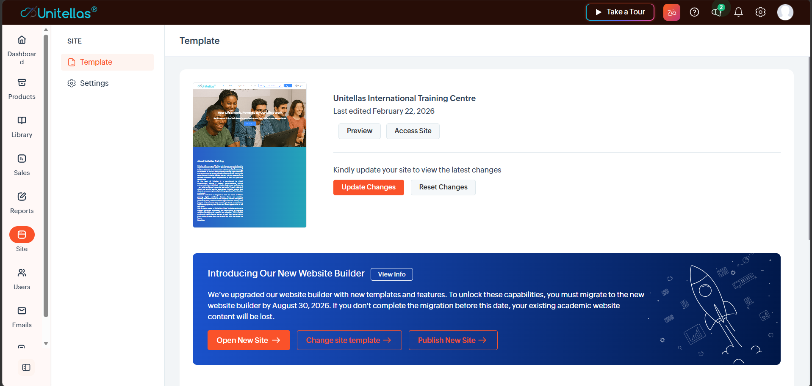
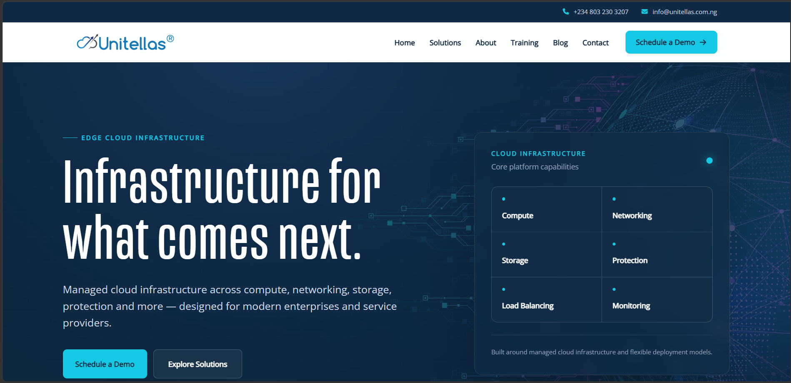
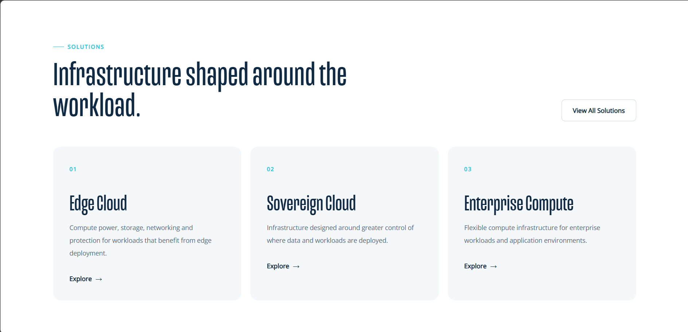
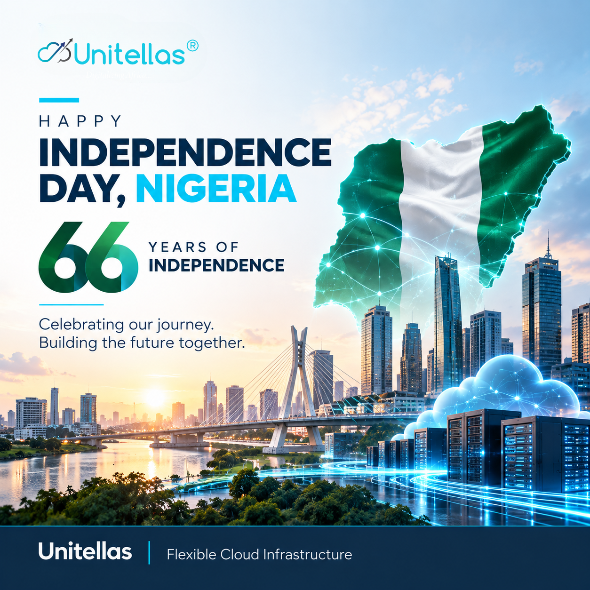
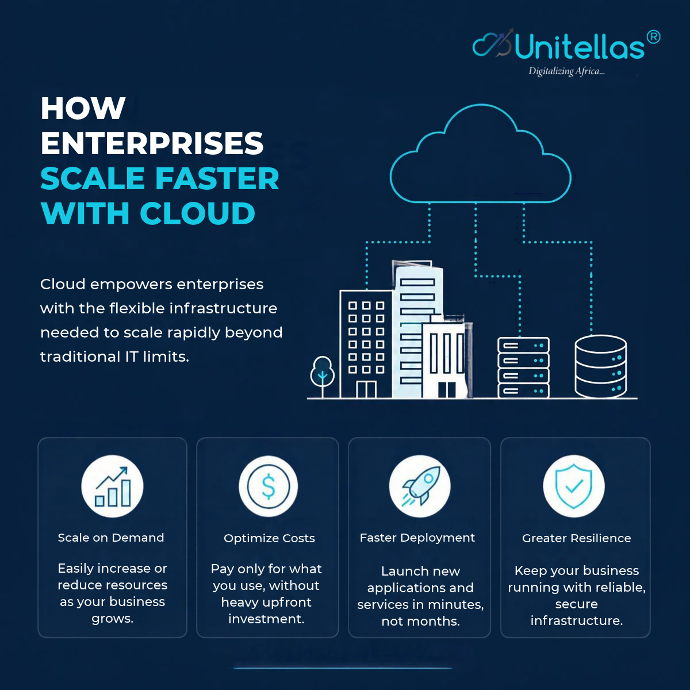

01 / LEARNING EXPERIENCE
Unitellas Training Centre
Managing a training website and learning journey through Zoho TrainerCentral, from site structure to course discovery.
DIGITAL PLATFORMS · EXPERIENCE · CONTENT
I manage the platforms, content and touchpoints that help people connect with brands, access information and learn with confidence.
Part strategist. Part problem-solver. Part maker.
I bring digital platforms, content and user experience together.A SELECTION OF MY WORK
A growing collection of digital platforms I manage, experiences I improve, and creative work I help bring to life.
01 / LEARNING EXPERIENCE
Managing a training website and learning journey through Zoho TrainerCentral, from site structure to course discovery.
02 / DIGITAL PLATFORMS
Website updates, content changes, responsive improvements and ongoing platform maintenance.
03 / GRAPHICS & CAMPAIGNS
Visual content designed to communicate technology topics and maintain a consistent digital brand presence.
04 / MULTIMEDIA
Video assets and motion-led storytelling created to make digital topics more engaging and accessible.
05 / DIGITAL CONTENT
Content planning and publishing support for clear, consistent communication across digital channels.
06 / EXPERIENCE STRATEGY
A look at the workflows behind platform quality, content consistency, usability and continuous improvement.
LEARNING PLATFORM MANAGEMENT
Selected screenshots from the Unitellas International Training Centre setup in Zoho TrainerCentral, showing course administration and site-template management.

Course listing and administration view for the training platform, including draft and published course states.

Site-template management view for the Unitellas International Training Centre website, including preview and site access options.
These screenshots document the platform administration environment. Add public-facing page screenshots and verified outcomes as the site and course catalogue progress.
CORPORATE WEBSITE MANAGEMENT
Selected views of the Unitellas corporate website, documenting its homepage and solutions page structure, navigation, visual hierarchy and service presentation.

Shows the main navigation, brand presentation, primary message and calls to action for the corporate website.

Shows how key offerings are grouped into scannable cards with concise descriptions and links to explore each solution.
These screenshots show the website's presentation and structure. The case study should describe your specific contribution only where you can verify it; screenshots alone do not establish which design or development tasks you personally completed.
SELECTED CREATIVE WORK
Selected technology and brand creatives created for Unitellas digital communications.
A visual explainer covering six practices for a more secure cloud environment.

A branded celebration creative connecting national identity, technology and progress.

An educational social graphic communicating cloud scalability and business benefits.
VIDEO & MOTION
Video content supplied for the Unitellas digital communications portfolio. Use the controls to watch each video.
Video content about digital sovereignty for technology awareness and communication.
Video content introducing managed cloud services and supporting brand communication.
PORTFOLIO NOTE These selected graphics and videos were supplied for this portfolio. Confirm company approval before public publication and add verified project context or performance results where available.
WHAT I BRING TO THE TABLE
I work across the layers that make digital experiences useful: the platform behind the scenes, the content people see, and the journey they move through.
Let's talk about your project ↗Website maintenance, CMS/LMS administration, updates, quality checks and issue coordination.
Responsive layouts, clear navigation, consistent interfaces and thoughtful user journeys.
Graphics, videos, campaign assets and digital storytelling that make ideas easier to understand.
Training website structure, course discovery, learner-facing content and LMS experience.
Content planning, publishing workflows, brand consistency and cross-channel communication.
A LITTLE ABOUT ME
I'm Anienamakan Emmanuel Udo, a Digital Experience Manager with a frontend development background. My work sits where digital platforms, user experience and content meet.
At Unitellas International, I work across the company's digital touchpoints, including its website, training platform and digital content. I enjoy making digital systems easier to navigate, keeping experiences consistent, and turning ideas into useful online experiences.
Download CV ↓
Add your CV PDF to the assets folder and name it
Anienam-Udo-CV.pdf to activate this link.
HAVE A PROJECT OR OPPORTUNITY?
Open to conversations about digital experience, platform management, learning platforms and creative digital work.